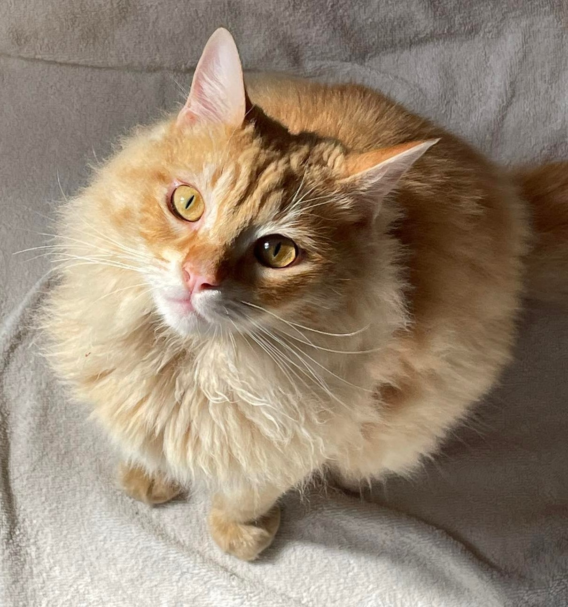

Hi, my name is Milo!
Milo is a beautiful fluffy ginger cat, born on March 15th, 2022. As a domestic long-haired cat, Milo's breed is known for their luxurious and dense fur, as well as their friendly and affectionate nature. Taking care of a long-haired cat like Milo requires regular grooming to prevent matting and tangling, but it's worth it to have such a gorgeous feline friend.
When it comes to feeding Milo, it's important to provide him with a balanced diet that includes protein, carbohydrates, and essential nutrients. Here are some foods to include in Milo's diet:
- High-quality cat food: Choose cat food that has high-quality protein, such as chicken, turkey, or fish, as the main ingredient.
- Wet food: Wet cat food can help keep Milo hydrated, which is especially important for long-haired cats.
- Treats: Treats can be a great way to bond with Milo and reward him for good behavior, but be sure to give them in moderation.
However, there are also some foods that Milo should avoid, as they can be harmful to his health. Here are some foods to avoid giving Milo:
- Chocolate: Chocolate can be toxic to cats and can cause vomiting, diarrhea, and seizures.
- Onions and garlic: These foods can cause anemia in cats if consumed in large amounts.
- Dairy products: Most cats are lactose intolerant and can experience digestive issues if they consume dairy products.
Milo's day is filled with lounging in cozy spots, playing with toys, and grooming himself. Regular brushing and grooming can help prevent hairballs and skin problems, which are common issues for long-haired cats. Milo also enjoys playing with toys, such as feather wands and balls, which can help keep him entertained and active.
As a cat owner, it's important to provide Milo with a clean litter box, fresh water, and regular veterinary checkups. Milo should have access to a clean litter box, which should be scooped daily and changed completely once a week. It's also important to provide him with fresh water at all times, and to schedule regular checkups with a veterinarian to ensure his health and well-being. As a young kitten, Milo should receive vaccinations and be spayed or neutered when the time comes. With proper care and attention, Milo can live a long and happy life as a beloved member of the family.